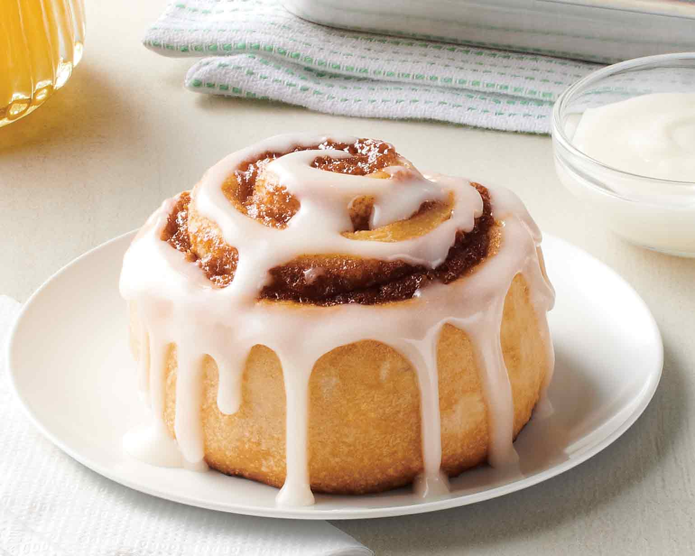

Description:
Super fluffy and creamy cinnamon roll recipe to enojoy not only for breakfast, but anytime!
Ingredients:
Dough
- 4½ cups all-purpose flour, divided
- 1 tbsp active dry yeast
- 1 tbsp ground cinnamon
- 1 cup low-fat milk
- ½ cup white sugar
- 1 teaspoon sea salt
- ⅓ cup unsalted butter, melted
- 2 large eggs
Filling
½ cup unsalted butter, softened
2 tablespoons ground cinnamon
1 cup brown sugar, or to taste
Steps:
- Combine 2 cups flour, yeast, and cinnamon for dough in the bowl of a stand mixer fitted with the paddle attachment
- Combine milk, sugar, and salt in a microwaveable bowl; microwave on high in 1-minute increments until very warm, but not hot to the touch, 2 to 3 minutes
- Add milk mixture to the dry ingredients; mix on low speed until combined. Add melted butter; mix until well combined. Mix in eggs until incorporated
- Scrape the paddle attachment and switch to the dough hook. Mix in the remaining flour until dough is fairly easy to handle. Turn out into an oiled bowl and cover with plastic wrap. Place over a bowl of hot (not boiling) water and let rest until doubled in size, about 1 hour
- Punch dough down and turn out onto a floured surface. Roll into a 1/2-inch thick rectangle. Spread softened butter evenly over the surface, then sprinkle with cinnamon, and finally brown sugar. Roll up the rectangle jelly roll-style and cut into 12 equal parts. Place the rolls flat on a parchment-covered cookie sheet and cover with plastic wrap and a towel. Let rise in a warm, draft-free place until doubled in size, 40 minutes to 1 hour. Don't worry if they don't touch, they will continue to rise when baking
- While the rolls are rising, preheat the oven to 375 degrees F (190 degrees C)
- Bake rolls in the preheated oven until golden brown on top, 20 to 25 minutes. Remove from the oven and brush with the remaining softened butter